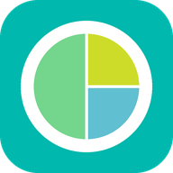

e-GiziProlanis
Kalkulator status gizi peserta Prolanis
(Diabetes Melitus Tipe 2 dan Hipertensi)
📘 Panduan Penggunaan
1. Memasang aplikasi di HP
Android (Chrome): buka alamat aplikasi, lalu ketuk Pasang pada tawaran yang muncul. Bisa juga lewat menu ⋮ → Instal aplikasi atau Tambahkan ke layar utama.
iPhone (Safari): buka alamat aplikasi, ketuk tombol Bagikan → Tambahkan ke Layar Utama.
Ikon e-GiziProlanis akan muncul di layar HP. Pemasangan pertama memerlukan internet; setelah itu aplikasi bisa dipakai tanpa internet.
2. Cara memakai untuk petugas
- Pilih Saya Petugas.
- Isi data pengukuran: jenis kelamin, usia, berat badan, tinggi badan, lingkar perut, penyakit, dan aktivitas sehari-hari.
- Bila perlu, isi data opsional: lingkar panggul (untuk RLPP), tinggi lutut (untuk lansia yang sulit berdiri tegak), serta tekanan darah, gula darah, dan kolesterol total.
- Ketuk Hitung Status Gizi. Hasil berisi status gizi, BBI, kebutuhan energi, susunan porsi penukar, target penurunan BB, dan rekomendasi gizi.
- Ketuk Simpan Gambar untuk menyimpan hasil 1 halaman, atau Bagikan untuk mengirim lewat WhatsApp.
- Rumus, ketentuan, dan sumber perhitungan dapat dilihat di menu 📖 Rumus & Referensi.
- Untuk mencari URT dan berat bahan makanan penukar (mis. jagung, ikan, pisang), buka menu 🔎 Daftar Penukar.
3. Cara memakai untuk peserta
- Siapkan kartu atau catatan hasil pengukuran dari petugas saat kegiatan Prolanis.
- Pilih Saya Peserta Prolanis.
- Isi angka-angkanya sesuai catatan dari petugas. Hasil pemeriksaan tekanan darah, gula darah, dan kolesterol boleh dikosongkan bila tidak ada.
- Ketuk Hitung Status Gizi, lalu baca hasil dan pesannya.
- Simpan gambar hasilnya dan bawa saat konsultasi berikutnya dengan petugas gizi.
4. Arti warna dan istilah
- ✓Hijau: sudah sehat atau sesuai target. Pertahankan.
- !Kuning: perlu diperhatikan.
- !Merah: perlu diperbaiki; konsultasikan dengan petugas gizi atau dokter.
| BB | Berat badan (kg) |
| TB | Tinggi badan (cm) |
| LP | Lingkar perut (cm) |
| IMT | Indeks Massa Tubuh: berat badan dibandingkan tinggi badan |
| BBI | Berat Badan Ideal (rumus Broca modifikasi) |
| TD | Tekanan darah (mmHg) |
| GD | Gula darah (mg/dL) |
Data Pengukuran
Isi sesuai hasil pengukuran petugas saat kegiatan Prolanis (lihat kartu atau catatan dari petugas).